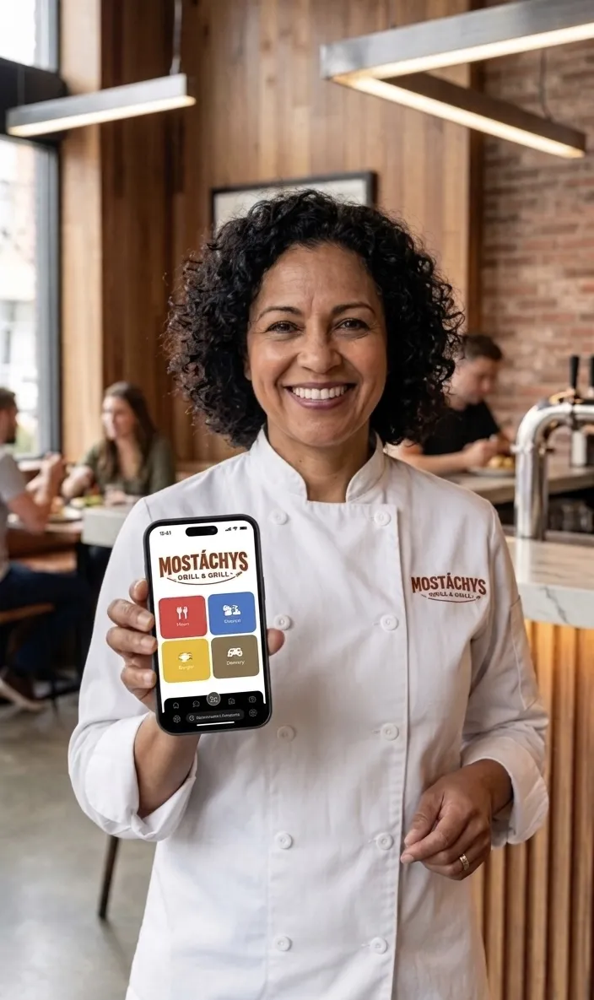

Qué Significa una Tienda Online Para Tu Negocio de Comida

Estás Buscando, y No Estás Solo
"¿Cómo armo una tienda online para mi restaurante?"
"¿Cuál es la mejor forma de tomar pedidos online?"
"¿Cómo pongo mi restaurante online?"
Todos los días, miles de dueños de restaurantes buscan exactamente estas preguntas. Y con razón — el negocio gastronómico está cambiando más rápido que nunca.
El Malentendido
La mayoría de los restaurantes piensa que una "tienda online" es para vender productos, como Amazon. Vendés remeras. Vendés electrodomésticos. Eso es una tienda online, ¿no?
Incorrecto.
Para restaurantes, una tienda online es algo completamente distinto. Es una representación digital de tu negocio. Es donde tus clientes van a ver tu menú, pedir comida y pagarte — todo sin levantar el teléfono ni visitarte en persona.
Por Qué Esto Importa Ahora
En los años 2000, tener un sitio web era suficiente. Subías tu menú, tus horarios, tu ubicación. Los clientes te encontraban, te llamaban, venían.
Ese mundo se terminó.
¿Hoy? El 67% de los clientes prefiere pedir directamente del sitio web o app del restaurante — no de plataformas de delivery de terceros. Quieren una relación directa con vos. Y si no estás ahí, se van a otro lado.

Cómo una Tienda Online Realmente Te Ayuda
Una tienda online hace tres cosas que los pedidos tradicionales no hacen:
1. Te hace ver profesional. Menús digitales, un sistema de carrito pulido, y un proceso de pago — eso es mucho más impresionante que una lista de precios garabateada o un link a un PDF. Los clientes te ven como legítimo, moderno y confiable.
2. Te pagan en el momento del pedido. Acá está la verdadera ventaja: cuando un cliente pasa la tarjeta y paga en ese momento, está comprometido. Se acabó el "sí, voy a pedir" seguido de que te abandonen por la competencia. Pago = venta asegurada. Vos recibís el dinero por adelantado, ellos reciben su comida a tiempo.
3. Tu audiencia crece. Una tienda online significa que los clientes te pueden encontrar 24/7. Alguien con antojo de tu comida a las 11 PM puede navegar tu menú y hacer un pedido sin llamar. Llegás a gente que nunca hubiera entrado porque no sabía que existías.
La Conclusión
Una tienda online no es un lujo. Es cómo sobrevivís en 2026.
Si tu restaurante no está online, es invisible. Y los restaurantes invisibles no crecen.
¿Listo para llevar tu restaurante online?
Probá GetQRCamera gratis — Construí tu tienda online personalizada en minutos. Sin tarjeta de crédito. Sin contratos a largo plazo.